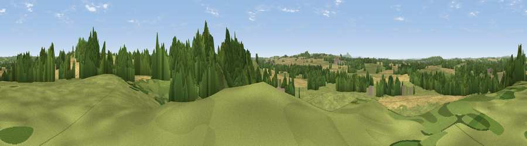

Viewpoint near Outwoods
#26057 in England · top 44% of its area beats it · near OutwoodsWhere it is
The exact computed spot (SJ 78625 18225). Click the marker for map links.
The view, rendered

A 360° render of this exact spot computed from the terrain model, tree cover and land cover — summer colours, afternoon light, calibrated against photographs of famous viewpoints. Real trees, hedges and buildings will differ in detail.
The panorama
Grey silhouette: terrain skyline in each direction (720 bearings, Earth curvature and refraction included). Dashed green: skyline with trees (+15 m) and buildings (+8 m) as obstacles. Blue strip: how far the ground is visible on each bearing.
Where the view opens
Wedge length = distance to the farthest visible ground on that bearing (vegetation-aware). Rings at 10, 25 and 50 km.
What fills the view
49% grassland · 25% woodland · 23% cropland · 3% built-up
Angular shares of the visible panorama (visual magnitude), not map area. Landscape diversity 0.50 (0–1 Shannon).
Key numbers
More beautiful places nearby
The staircase of upgrades: each row has a higher view potential than everything closer. Driving times are estimates from straight-line distance, calibrated against real road routing — check an actual route before setting out.
| Place | Direction | Drive | Score |
|---|---|---|---|
| Viewpoint near Outwoods | ENE · 1 km | ~2 min | 56.8 |
| Viewpoint near Sheriffhales | SSW · 4 km | ~9 min | 63.6 |
| Viewpoint near Newport | WNW · 5 km | ~12 min | 66.4 |
| Viewpoint near Priorslee Village | SW · 9 km | ~17 min | 70.4 |
| The Ercall | WSW · 16 km | ~29 min | 79.4 |
| Viewpoint near Little Wenlock | WSW · 18 km | ~31 min | 84.2 |
| The Wrekin | WSW · 19 km | ~32 min | 85.0 |
| Viewpoint near Little Wenlock | WSW · 19 km | ~33 min | 86.6 |
52.76120, -2.31819 · source: screening · position refined by local search. Computed location — check access rights before visiting.